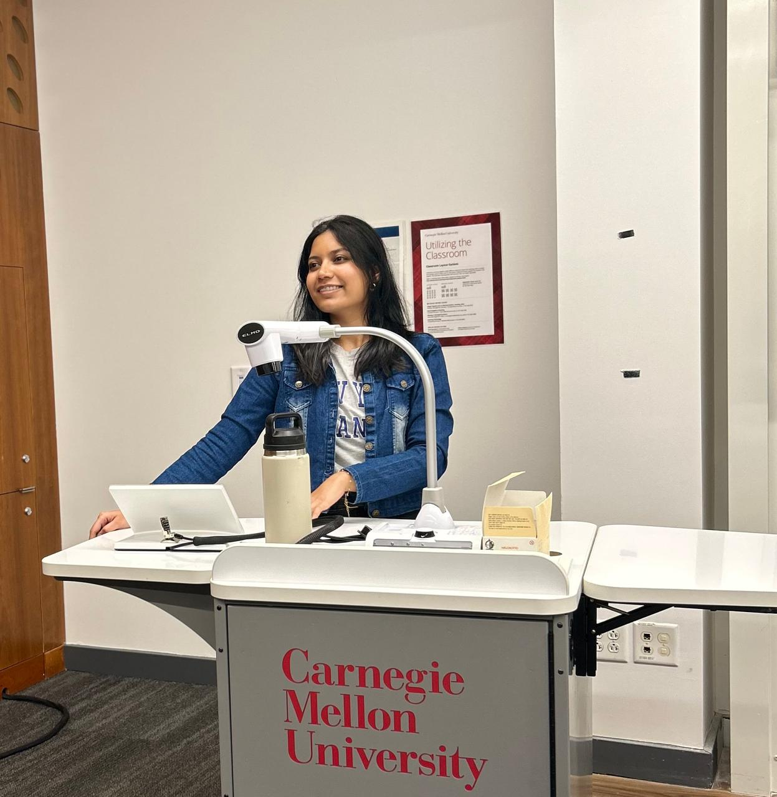

Graduate Research Assistant, Computational Systems Immunology Lab, University of PittsburghDec 2024 – Present

Hi! I'm an incoming PhD student at Carnegie Mellon University's School of Computer Science and the University of Pittsburgh School of Medicine. I'll be working on interpretable machine learning, protein language models, and agentic and responsible AI for immunology.
Please feel free to reach out if you have ideas to discuss or just want to have a chat :)